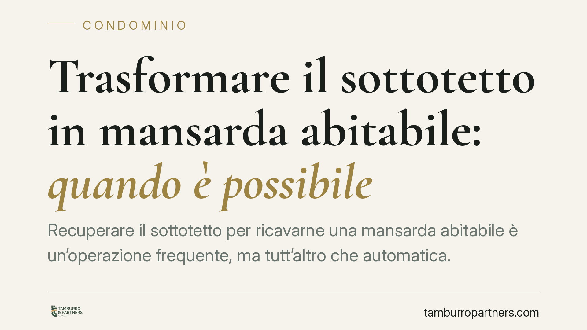

Trasformare il sottotetto in mansarda abitabile: quando è possibile
Recuperare il sottotetto per ricavarne una mansarda abitabile è un'operazione frequente, ma tutt'altro che automatica. La fattibilità dipende da chi è proprietario del vano, da cosa prevede il regolamento condominiale e dai requisiti urbanistici locali. Prima di avviare i lavori occorre verificare titoli, altezze e vincoli: ignorarli espone a contenziosi con gli altri condòmini e a sanzioni edilizie.

Di chi è il sottotetto
La prima domanda da porsi non è tecnica ma giuridica: il sottotetto è mio?
Non esiste una risposta valida per tutti. La proprietà del vano dipende dai titoli di acquisto e dalla sua funzione concreta. Se il sottotetto serve esclusivamente l'appartamento sottostante ed è a esso strutturalmente collegato, si presume di proprietà esclusiva del titolare di quell'unità.
Se invece il vano assolve una funzione comune, come proteggere l'edificio dagli agenti atmosferici o coprire l'ultimo piano a beneficio di tutti, rientra tra le parti comuni ai sensi dell'art. 1117 cod. civ. La Cassazione Civile ha chiarito in più occasioni che il criterio decisivo è la destinazione oggettiva del bene, non la sua collocazione fisica.
Inquadramento normativo
L'art. 1117 cod. civ. elenca in via esemplificativa le parti comuni dell'edificio: tetto, lastrici solari, strutture di copertura. La norma pone una presunzione di comunione superabile solo con un titolo contrario, cioè un atto scritto (rogito, regolamento contrattuale) che attribuisca la proprietà esclusiva del vano.
La giurisprudenza consolidata distingue tra sottotetto "tecnico" — mera camera d'aria priva di autonoma utilizzabilità, tendenzialmente pertinenza comune della copertura — e sottotetto dotato di dimensioni e caratteristiche tali da renderlo di per sé utilizzabile. Solo nel secondo caso può configurarsi la proprietà esclusiva e, quindi, un diritto individuale a trasformarlo.
Sul piano urbanistico, il recupero abitativo dei sottotetti è disciplinato dalle leggi regionali, che fissano requisiti di altezza media, rapporti aeroilluminanti e superfici minime. Queste soglie variano da regione a regione e vanno verificate caso per caso.
Cosa cambia in concreto
Per il proprietario dell'ultimo piano che intende ampliare la propria abitazione, la trasformazione può incidere su due fronti.
Sul versante interno, se il sottotetto è di proprietà esclusiva, l'intervento è in linea di principio consentito, ma resta soggetto ai titoli edilizi e ai requisiti regionali di abitabilità.
Sul versante condominiale, anche il proprietario esclusivo incontra limiti. Non può alterare il decoro architettonico dell'edificio, né compromettere la sicurezza o la stabilità delle strutture comuni. L'apertura di nuove finestre o abbaini sul tetto — che è parte comune — richiede particolare attenzione: incide su un bene di tutti e può legittimare l'opposizione degli altri condòmini.
Se invece il vano è comune, la trasformazione a uso esclusivo di un singolo non è ammissibile senza il consenso degli altri comproprietari, con le maggioranze o l'unanimità richieste a seconda dell'operazione.
Attenzione infine al regolamento condominiale di natura contrattuale: può contenere divieti espressi di modificare le coperture o mutare la destinazione dei vani. Tali clausole, se validamente approvate, vincolano tutti i condòmini e prevalgono sulle presunzioni di legge.
Cosa fare in concreto
- Verificate i titoli di proprietà. Recuperate il rogito e gli atti precedenti per stabilire se il sottotetto sia vostro o comune. In caso di dubbio, richiedete una visura e un'analisi documentale.
- Leggete il regolamento condominiale. Individuate eventuali divieti di modifica delle coperture o vincoli sulla destinazione d'uso dei vani.
- Controllate la normativa regionale sul recupero dei sottotetti. Verificate altezze medie, rapporti aeroilluminanti e superfici minime richieste per l'abitabilità.
- Acquisite il titolo edilizio corretto. Rivolgetevi a un tecnico abilitato per individuare la pratica idonea (permesso di costruire o SCIA) prima di ogni intervento.
- Coinvolgete l'amministratore e gli altri condòmini quando l'opera interessa parti comuni, per prevenire opposizioni e contenziosi.
La trasformazione del sottotetto è possibile, ma richiede un percorso ordinato: prima la verifica giuridica, poi quella urbanistica, infine il progetto. Anticipare i controlli riduce i rischi e consente di valutare in modo realistico la fattibilità dell'intervento.
Ogni condominio ha una storia a sé.
Se gestisci un'amministrazione e vuoi un confronto su una specifica questione condominiale, scrivi allo studio. Ti rispondiamo entro un giorno lavorativo.